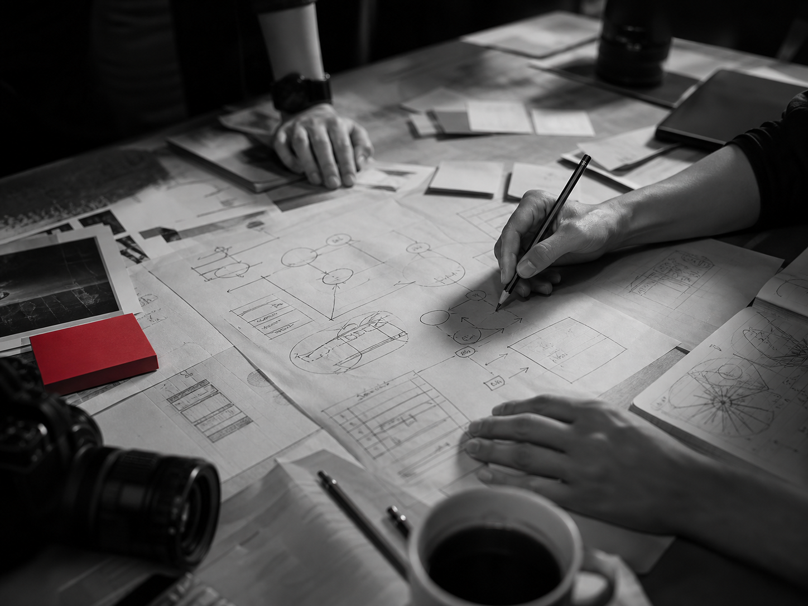

Business design / digital product / growth
Ideas,Experiences,Growth.
事業の輪郭を描き、体験を設計し、成長の仕組みまでつくる。
01 / Statement
We build the conditions for business to move.
私たちは、ブランド・プロダクト・ウェブ・AI・店舗体験・マーケティングを切り離さず、ひとつながりのものとして捉えます。
アイデアを形にし、人に届く体験へと整え、運用と改善を重ねて成長へつなげていくチームです。
02 / Three Lenses
Three lenses, one business experience.
サービスの羅列ではなく、事業を前に進めるための3つの視点として整理します。

03 / Project Fragments
Fragments of work, not a list of services.
ブランド・デジタル・AI・体験・成長支援を横断して取り組んできた、仕事の一端です。


Start a conversation
Bring us a question, a plan, or a vague feeling.
まだ整理できていない相談でも構いません。方向性や制約、事業の問い、ぼんやりとした可能性からでも、お話しできます。
問い合わせページへ